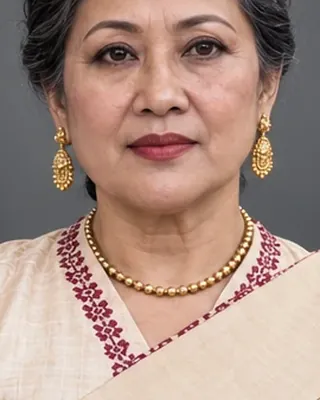

নুমলী ৰাজমাউ
active 1817–1818 · Queen-mother of Chandrakanta Singha

Reportedly behind the plot that led to the murder of Badan Chandra Borphukan.
Record confidence: medium.
Open interactive profile
August 1817